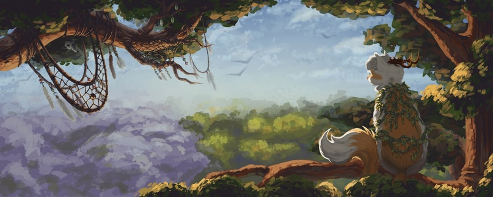
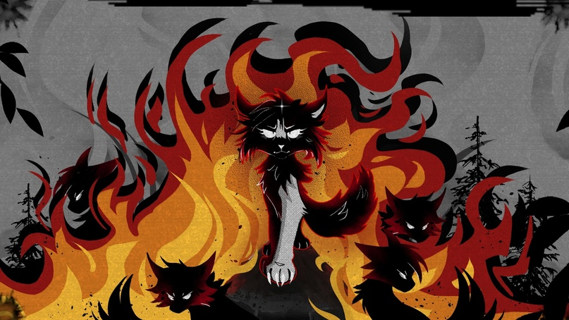
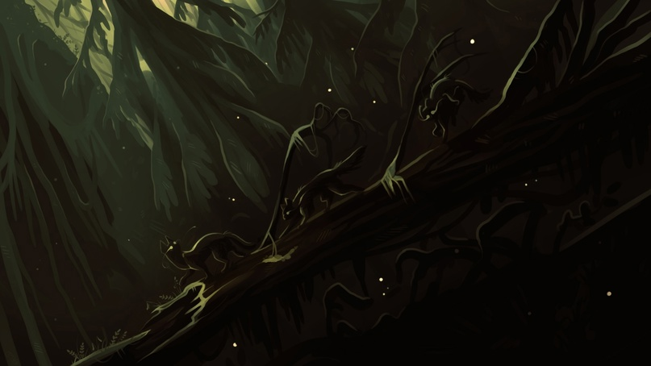
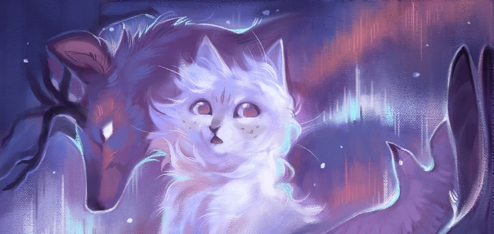

Мир KINWOODS — это самостоятельная вселенная, в центре которой стоят природа, животные, духи и магия. Здесь всё живое — часть великого цикла: духи создают силу, сила рождает жизнь, а после смерти эта сила возвращается обратно в Мир Духов.
Существа этого мира различаются по степени развитости. Одни — дикие и первобытные, живущие инстинктами, охраной своей территории, семьёй. Другие — более разумные, племенные, следуют традициям и законам, но по-прежнему подчиняются звериной природе. А есть и те, кто достиг очеловеченности: умеют чувствовать сострадание, гордость, мыслить критически, развивать язык, стремиться к силе.
Игрок берёт на себя роль одного из таких существ — кота, живущего в мире, полном традиций, веры, чести и внутреннего долга. Эти коты — не просто звери, а личности. Они способны осознанно выбирать свой путь и, если потребуется, броситься в пламя ради того, что считают правильным.
Коты в KINWOODS отличаются от обычных по своей физике и природе. Это сделано как ради баланса игры, так и ради глубины повествования. По своей форме они напоминают более крупных и сильных диких кошек — каждый сравним с рысью по размеру и силе. Эти существа способны выживать в дикой среде, участвовать в боях и влиять на ход истории.
Каждый игрок — это не просто персонаж, а особая личность. Герой, который может выбирать собственный путь, развивать свои способности и исследовать мир. Игровой прогресс — это не только сила и победы, но и знание, решения, следы, оставленные в истории.
В мире KINWOODS каждое существо вписано в течение жизни, где каждый играет свою роль. Здесь нет единой меры разумности — кто-то живёт, полагаясь только на инстинкты, кто-то способен запоминать, общаться, чувствовать и выбирать. Некоторые животные достигают такой степени осознанности, что могут говорить о чести, свободе и вере — как и коты, ставшие частью разумных видов мира.
Олени, поколениями жившие под покровом духа, научились передавать мысли, говорить с котами, понимать долг. Но даже их речь и обычаи не стирают след природы — они всё ещё живут стадом, следуют циклам и защищают своих. Волки — звери с чёткой структурой, с привязанностью к стае, способные чувствовать, вспоминать и принимать решения. Они могут стать врагами, союзниками, наблюдателями — но никогда не бывают бездумными.
Все разумные животные в этом мире подчиняются древнему правилу: не бери больше, чем тебе нужно. Этот закон не записан словами, но отражён в поведении — в охоте, в отступлении, в выборе. Хищник убивает, когда голоден. Травоядный защищается, когда угроза рядом. Здесь нет желания уничтожать всё чужое — только стремление сохранить своё.
Коты не становятся союзниками любому существу только из-за способности говорить. Некоторые соперничества ведут начало ещё с древних времён, когда мир был дик и правила были просты: волк гонит кота, животное защищает семью и землю. Эти инстинкты глубоки, и с ними живут.
Но мир не всегда держит форму. Иногда появляются те, кто потерял контроль. Это бывшие разумные существа, пережившие слишком многое: утрату, одиночество, боль. Их разум треснул, как лёд весной, и теперь они — не просто дикие. Они страшнее. Эти звери нарушают привычный уклад жизни. Их боятся. Они непредсказуемы. Их не понять. Они больше не выбирают, они просто существуют в разрушении.
Есть и такие, чьи поступки опаснее потому, что они осознанны. Это коты, которых ведёт жажда силы, животные, чей путь продиктован местью или убеждённостью в собственной правоте. Они понимают, что нарушают равновесие. Но делают это, потому что хотят.
Для игрока есть выбор — примкнуть к одной из двух фракций: Хранителям Леса или Изгоям. У каждой из них — свой путь, своя философия, свои корни.
«Мы не отделены от леса — мы его дыхание. Всё, что даём, возвращается. Всё, что берём, даёт нам силу защищать.»
Хранители Леса — древние коты, обитающие в сердце великого магического леса. Их общество построено на равновесии и вере в порядок, разделённое на две касты. Друиды изучают силу духов, проводят обряды и носят на голове рога — знак связи с духами предков. Они хранят память, ведут племя и прислушиваются к знамениям леса. Дозорные — защитники и воины, что следят за границами, охраняют сородичей и живут по кодексу чести.
Хранители чтят традиции, уважение к предкам, самопожертвование и грациозную силу. Природа — не просто их дом, она вплетена в их кровь. Они не правят лесом — они его часть.
«Мы берём то, что нужно, и держим то, что наше. Кто стоит рядом с нами — под нашей защитой. Кто стоит против — сгорит в пепле.»
Изгои — коты, чья история начинается с пепла. Когда-то они были частью великой Империи, что поглощала и сжигала всё на своём пути. Теперь они живут в сгоревшем лесу, среди обугленных деревьев и тлеющей земли. Этот край суров, наполнен магией огня, и всё же — он родной.
Изгои чтят Духа Огня, помня его силу, разрушительность и власть. Они верят в умение, в подвиг, в выживание. Здесь важны не древние традиции, а результат. Если что-то нужно их племени — они это возьмут. Но они не бездушны: Изгои чтят долги, защищают своих, умеют торговать и строить. В глубине их леса работает рынок, открытый для разумных существ. Изгои не боятся ни хищника, ни духа. Они умеют заключать сделки, протягивать лапу — и получают то, что считают заслуженным. Их мир строится не на памяти, а на поступках.
«Я не под знаменем, но знаю, за что дерусь. Моё слово — мой клык, мой путь — мой выбор.»
Странники — это третий путь. Не фракция, а образ жизни. Те, кто идёт один или с небольшой группой, не клянётся верности ни одному племени, но не живёт в стороне от мира. У каждого странника — своя история, своя причина быть вне фракций. Кто-то родился вне кланов и привык полагаться только на себя. Кто-то ушёл из племени, пронеся с собой память и клятвы. А кто-то просто не хочет выбирать.
Странники не отрезаны от мира. Они могут быть торговцами, разведчиками, охотниками, помощниками фракций. Один принесёт редкие травы в лагерь, другой придёт на праздник как старый друг. А третий — украдёт припасы и исчезнет в зарослях. Всё зависит от того, какой путь выберет сам герой.
Жизнь странника — это свобода. Но это и ответственность. Никто не скажет, что тебе делать. Никто не прикроет спину без причины. Но если ты сумеешь построить отношения — ты не будешь один. Странник может быть вестником, скитальцем, отступником, героем или угрозой. Всё зависит от его решений и от того, как его встречает остальной мир.
Есть места, куда ступает не каждая лапа. Места, где лес дрожит не от ветра, а от памяти. Где снег не холодит, но всё же лежит веками. Где всё, что ты знал, звучит тише, но яснее. Это — Мир Духов. Он не где-то "там". Он везде. Как корни у дерева, как кровь, что течёт сквозь мир — потоки Мира Духов пронизывают всё сущее. Именно они сплетают мир.
Один из них может пройти под сгоревшим лесом Изгоев, другой — пробудет вечной тропой под снежной долиной. Иногда ты стоишь на границе двух миров, сам того не зная. В начале была лишь сила — и всё, что живёт, когда-то было её отблеском.
Мир Духов создаёт силу. Сила наполняет котов, птиц, волков, даже самых малых жучков. Эта сила становится телом, мыслью, поступком. Но... как бы ты ни жил — всё возвращается назад. Когда живое существо умирает — сила возвращается обратно в Мир Духов. Всё, что существует, когда-то вышло из Мира Духов и однажды вернётся в него.
Иногда сила в существе была столь велика, что она не растворяется. Она остаётся — как огонь, что не хочет гаснуть.
Так рождаются Духи.
Дух — это не просто отголосок. Это воля, прожившая жизнь, и обрёвшая облик в бесконечности. Бывают духи стихийные — как Дух Огня, что согревает и опаляет. Бывают духи места — как Дух Снежной Долины, что знает все её тропы. Есть духи животных — Дух Оленя, Дух Волка, даже Дух Крысы — все живы, пока живы их следы. А бывают духи понятий — Дух Выживания, Дух Радости, Дух Тишины. Их образы переплетаются, как нити — один может быть и лесным, и оленем, и страхом. Всё в одном. Всё — одно.
Духи могут выйти из потока и войти в наш мир — в лице странного зверя, в порыве ветра, в лице старика, что говорит не тем голосом. Они чувствуют... многое. Но они не растут, как растём мы. Они не голодают, не жаждут, не спят — но могут помнить, что значили эти чувства. Дух-волк может чувствовать необходимость в охоте. Дух-медведь — впадать в "спячку", хоть и не нуждается в ней. Иногда это приносит им боль. Иногда — печаль.
Могущественные духи способны делиться собой. Дух Огня рождает огоньков, что скачут по золоту углей. Дух Оленя может благословить рога дитя, превратив их в символ защиты. Они становятся покровителями, но и зависимы от нас.
Ведь каждый, кто почитает духа — кормит его силой. Сердце, наполненное верой, как узел, в который завязана новая нить. Чем больше живых существ поминают, чтят или верят в духа, тем он сильнее. Вера — это пища. Многие даже не знают, что отдают силу — но отдают. Так духи растут.
Так рос Дух Огня, пока племена Империи кланялись пеплу и пламени. Они не знали, что отдают часть себя — но он знал. И становился сильнее.
Так рос Ма’венан, пока Хранители Леса жили в ритме с тропами и зарослями. Он делился силой — без вознаграждения, без требований. И сам взял лишь одно: закон, что лёг в корни леса — бери только столько, сколько тебе нужно, и возвращай больше, чем взял. С тех пор этот закон шепчется в каждом листе, зовётся в песнях стай, и прячется в копытах тех, кто ходит тихо.
Мир Духов и мир живых — не противоположности. Это узоры одной ткани. Нет границы — только шов, который живёт и дышит.
